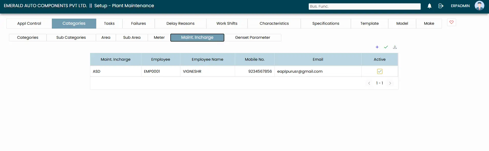

<div data-category="Plant Maintenance" data-title="Maintenance Incharge" data-updated="January 23, 2026" data-contributors="RoadmapIT" data-breadcrumb="Home,Plant Maintenance,Maintenance Incharge">
  <div class="page-content">
    <h5>Maintenance Incharge</h5>
    <p>A Maintenance In-charge is a professional responsible for overseeing and coordinating all maintenance activities within a facility or organization. The Maintenance In charge is defined are associated in this screen with its corresponding Planner.</p>

    <h5>Navigation path:</h5>
    <p class="fs-6">Plant Maintenance \ Setup \ Setup-Plant Maintenance \ Category \ Maintenance Incharge</p>

    
    <ul style="list-style-type: none; align-content: center">
      <li class="mouse-icon">
        Click
        <i class="bi bi-plus fs-4 mx-2 text-primary"></i>
        to add
      </li>
      <li class="mouse-icon">Enter the maintenance Incharge Id.</li>
      <li class="mouse-icon">Enter/Select the Employee.</li>
      <li class="mouse-icon">
        Click
        <i class="bi bi-check-lg fs-4 mx-1 text-success"></i>
        to save
      </li>
    </ul>
  </div>
</div>
